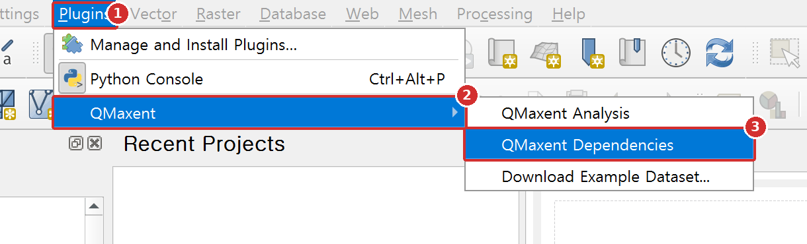
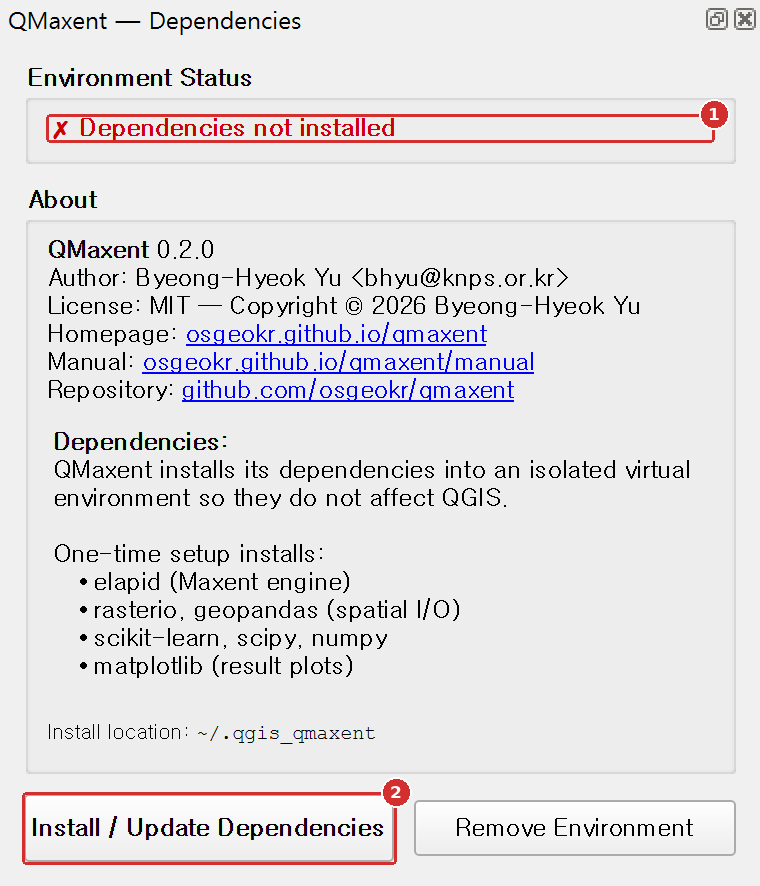
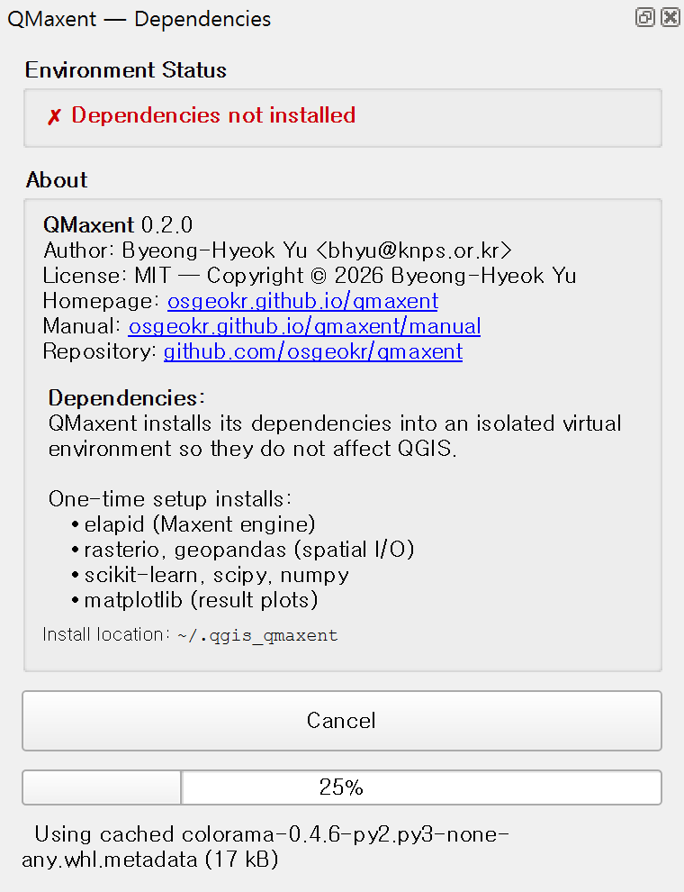
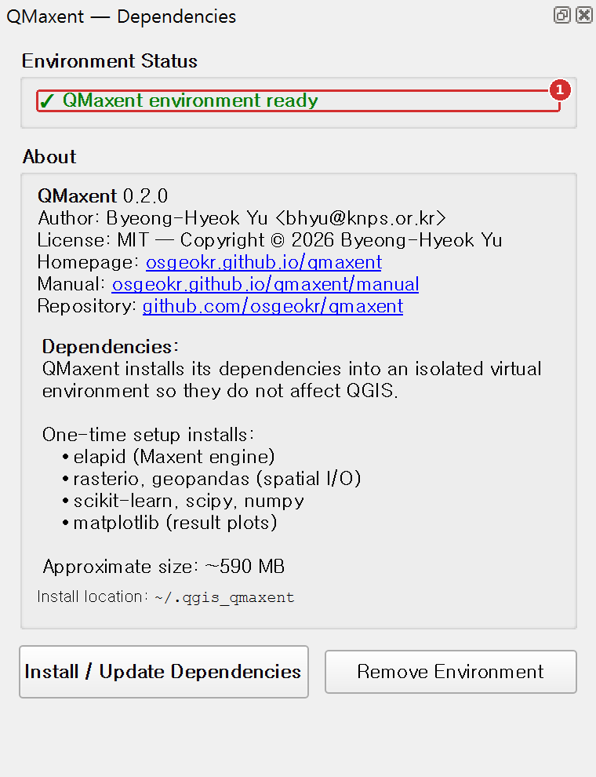

Dependencies¶
QMaxent's modeling engine — the elapid Python library and its companions (rasterio, geopandas, scikit-learn, matplotlib) — does not ship with QGIS. The first time you use the plugin, you install these dependencies into an isolated, per-plugin package folder so they do not affect your system Python or QGIS itself. On Linux and macOS this folder is a Python virtual environment; on Windows it is a plain package folder (see Where the packages are installed).
This is a one-time, ~5-minute setup.
Step by step¶
Step 1. Open the QMaxent Dependencies panel¶
The panel opens by itself right after the plugin is installed. You can also open it at any time from the menu.

- Open the Plugins menu.
- Point to QMaxent.
- Click QMaxent Dependencies.
Step 2. Install the dependencies¶

- Environment Status reads Dependencies not installed.
- Click Install / Update Dependencies.
The packages are downloaded from PyPI into
~/.qgis_qmaxent (%USERPROFILE%\.qgis_qmaxent on Windows), the path
shown at the bottom of the panel. The download is about 300 to 500 MB
(about 590 MB on disk). Allow 3 to 8 minutes on a typical broadband
connection. A progress bar and the package being installed are shown
below the button while you wait:

Step 3. Check that the environment is ready¶

- Environment Status turns green and reads ✓ QMaxent environment ready. You can close the panel and open QMaxent Analysis.
Environment Status messages¶
| Message | Meaning |
|---|---|
| ✗ Dependencies not installed | First-time setup needed |
| ✓ QMaxent environment ready | Everything is installed and ready to model |
| ✗ Dependencies need updating | The package list or the installation method changed with a plugin upgrade. Click Install / Update Dependencies again |
What is installed¶
QMaxent installs the following packages and their transitive dependencies:
- elapid — the Maxent engine (maxnet algorithm, spatial cross-validation, projection); see Anderson (2023).
- rasterio — raster I/O.
- geopandas — vector I/O for presence points.
- scikit-learn — cross-validation, ROC, AUC; see Pedregosa et al. (2011).
- scipy + numpy — numerical core; see Harris et al. (2020).
- matplotlib — response curves, ROC, jackknife plots.
These are pinned to versions that QMaxent has been tested against; the plugin's release notes record which versions ship with each release.
Where the packages are installed¶
All dependencies go into one folder per QGIS Python version, inside
~/.qgis_qmaxent (%USERPROFILE%\.qgis_qmaxent on Windows). The folder
name includes the Python version, for example venv_py3.12 for the
Python 3.12 that ships with current QGIS releases.
| Platform | How the packages are installed | Package location |
|---|---|---|
| Windows | The QGIS Python's own pip installs the packages into the QMaxent package folder (pip install --target). No separate Python interpreter is created. |
%USERPROFILE%\.qgis_qmaxent\venv_py3.12\Lib\site-packages |
| Linux, macOS | A Python virtual environment (venv) is created from the QGIS Python, and its pip installs the packages. |
~/.qgis_qmaxent/venv_py3.12/lib/python3.12/site-packages |
QMaxent only imports these packages inside QGIS, so on Windows it does not need an interpreter of its own. This change was made in 0.2.0: with QGIS 3.44.15 and later on Windows, the virtual-environment approach of 0.1.x stopped with "ensurepip ... returned non-zero exit status 1" before any package was downloaded.
Two environment variables change this behaviour. Set them before you start QGIS:
QMAXENT_CACHE_DIR: use another folder instead of~/.qgis_qmaxent, for example when your home directory is not writable or has little free space.QMAXENT_FORCE_VENV=1: on Windows, go back to the old virtual-environment method of 0.1.x. Use it only for troubleshooting.
Remove Environment¶
Use Remove Environment to delete the entire QMaxent package folder (the virtual environment on Linux and macOS) from disk. You might do this to free disk space, force a fresh re-install when something is broken, or switch to a different QMaxent version that pins different package versions.
After removal, the status banner returns to Dependencies not installed and Install / Update Dependencies becomes available again.
Troubleshooting¶
Installation fails with a network or SSL error
Most often this is a corporate proxy or firewall blocking
PyPI. Ask your administrator to allow pypi.org
and files.pythonhosted.org. The installer respects QGIS's proxy
settings, so configuring those in Settings → Options → Network
usually fixes it.
Windows: 'ensurepip ... returned non-zero exit status 1'
You are running QMaxent 0.1.x with QGIS 3.44.15 or later. Upgrade the plugin to 0.2.0 or later, which installs the packages without a virtual environment on Windows, then click Install / Update Dependencies again.
Disk space exhausted during install
The installer needs roughly twice the final size as scratch space while extracting wheels. Free at least 1 GB on the drive that holds your home directory before retrying.
“No module named …” after a successful install
Restart QGIS once. Python's import cache occasionally needs a clean process to pick up the new environment.
Plugin starts but Run Maxent button is disabled
Open the Dependencies dialog and confirm the status is green. If it is, restart QGIS; if it is not, click Install / Update Dependencies again.
Security note on the package folder¶
QMaxent's package folder is populated only from PyPI, by the QGIS
Python's pip on Windows and by a standard Python venv on Linux and
macOS. The plugin does not execute arbitrary code
from remote sources at runtime. Saved-model files (.pkl) are a separate
concern; see Saving and reusing models for the
security note on loading pickle files from untrusted sources.